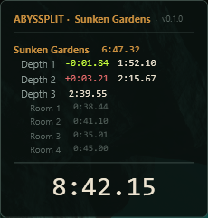
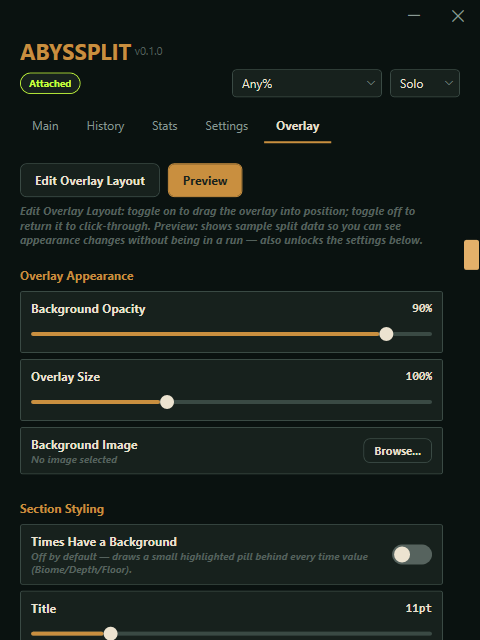

A speedrun timer and overlay that reads run state directly from Abyssus's own memory. No manual splitting, no guesswork.
Free and open source · PolyForm Noncommercial License

Attach it, play, and everything else — timing, splits, history, sharing — happens on its own.
IGT, Load-Free, and Load+Cutscene-Free run side by side — the last one is what splits and personal bests are actually built on.
Automatic floor-by-floor and room-by-room breakdown, with a running +/- delta against whichever comparison you pick.
Every attempt, finished or not. Per-location averages, a consistency figure, and how your PB has progressed over time.
Export any attempt as an .abysplit file to race a friend, or attach it when submitting a run for record verification.
The app version shows right on the overlay and in every exported file, so anyone checking a submission knows exactly what produced it.
Minimizes to the tray, can launch at sign-in, and the overlay is click-through by default — it's there when you glance at it, invisible otherwise.

Every visual detail is adjustable from the Configurator — no config files to hand-edit.
Both come from the same build — pick whichever fits how you use your PC.
Installs to your user profile — no admin rights needed — with a Start Menu entry and an optional desktop shortcut. Easiest way to keep it up to date.
Download InstallerA single self-contained .exe. Drop it anywhere — a USB drive, a shared PC — and run it directly.
Download Portable